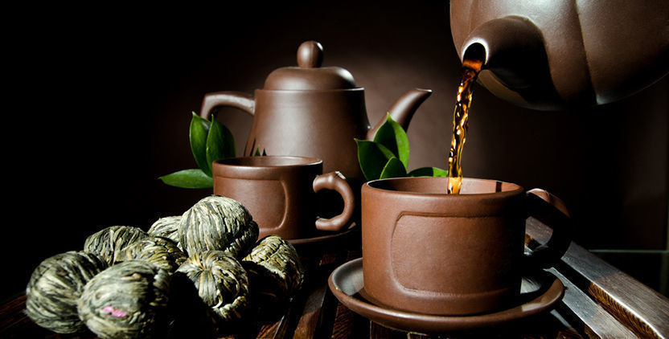
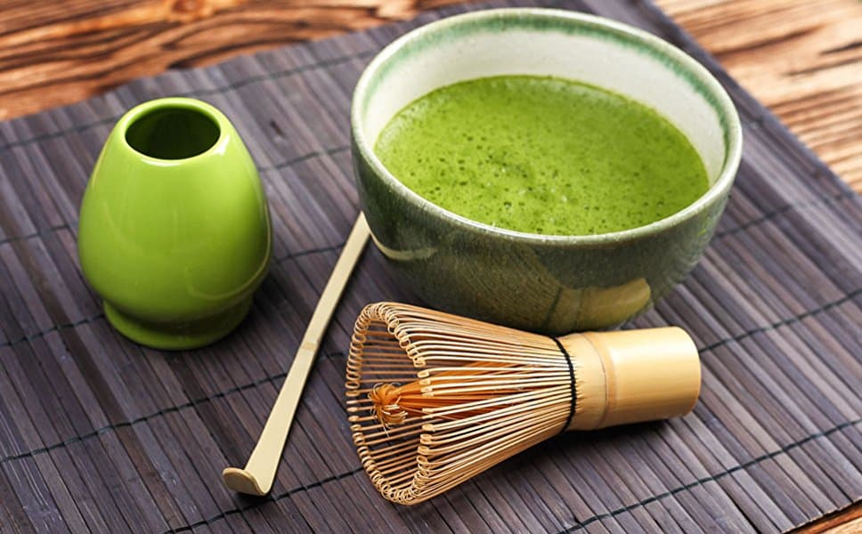

Чайна церемонія в Китаї та Японії
Чайна церемонія зародилася в Китаї і лише через декілька століть її атрибути успішно перекочували спочатку в японську, потім і в європейську культуру. У Китаї вірять, що чай – одна з «семи речей, потрібних щодня».
Еволюція чайної церемонії
Спочатку чай в Китаї пили для здоров'я, як ліки. Чайна традиція почала формуватися в храмах, ченці цінували стан спокою, радості та гармонії, яке дарував напій.
Перші згадки про вдумливі чаювання зустрічаються в літописах династії Тан, яким понад 1200 років. Вже тоді китайська чайна церемонія описувалася як «ча дао», що означає «шлях чаю».
З часом сформувалися принципи Гун Фу Ча (功夫茶) – вищої чайної майстерності. Це процес, в якому немає місця підходу «заварив, випив, зайнявся справами». Це про насолоду формою листа, кольором настою, ароматом напою і його смаком.
Припускають, що філософія розміреного чаювання родом з провінції Фуцзянь. Тому традиційний чай для чайної церемонії – улун, який роблять в цій місцевості. Але ніхто не заважає заварити за всіма правилами пуер, зелений або червоний сорт.
Китайська чайна церемонія – особливості і правила
Класична чайна церемонія не терпить поспіху. Головне – настрій і атмосфера умиротворення. Як це відбувається:
- Майстер готує все для чайної церемонії і розставляє посуд на чабані.
- Перший крок – знайомство з чаєм. Його засипають у спеціальну коробочку і передають по черзі всім учасникам церемонії. Вдихаєш аромат, розпізнаєш ноти, налаштовуєшся.
- Заварник прогрівають окропом, інший посуд теж обдають гарячою водою.
- Першу протоку не п'ють, вона потрібна, щоб змити пил з чаїнок і дати їм розпаритися.
- Заварений чай переливають у чахай (чашу справедливості). Так кожен отримує настій однакової міцності.
- Перед тим, як пити чай, знову вдихають його аромат і прислухаються до відчуттів. П'ють з маленьких піал, яких вистачає на 3-5 ковтків. Важливо не поспішати і знайомитися з відтінками смаку.
Сучасна чайна церемонія в Китаї підкреслює важливість таких моментів:
- Атмосфера – налаштуватися, сповільнитися, наповнюватися гармонією.
- Чай – дешеві сорти з пакетиків не підійдуть, тільки добротні, які часто називають церемоніальними.
- Вода – від якості і температури води залежить смак чаю.
- Посуд – чайна дошка, красиві піали і заварники, акуратні чайні іграшки створюють атмосферу.
- Техніка – майстер пам'ятає про плавність рухів і стриманість міміки. Чайна церемонія знаходиться під його контролем. Він доливає гостям чай, стежить за міцністю заварки, подає піали. Китайська чайна церемонія схвалює чай у чистому вигляді, без цукру і солодощів, які перебивають смак напою.
Японська чайна церемонія
Слово «чай» з'явилося завдяки китайському «ча» (茶). Технологію виготовлення напою також запозичили у китайських чайних майстрів. Але колись чай в Піднебесній обробляли парою і тільки згодом почали просмажувати. Японці зберегли вірність давній традиції.
Японська чайна церемонія відрізняється від китайської. Використовують тільки зелені сорти делікатної обробки. Зазвичай це порошковий чай матча, який акуратно розбавляють водою і збивають вінчиком.
Класична японська чайна церемонія пропонує учасникам пити матчу з однієї керамічної чаші, яка називається чаван. Найчастіше заварюють насичений варіант матчі - койтя. Напій виходить терпкуватим, тому можна доповнити його сухофруктами або солодощами.